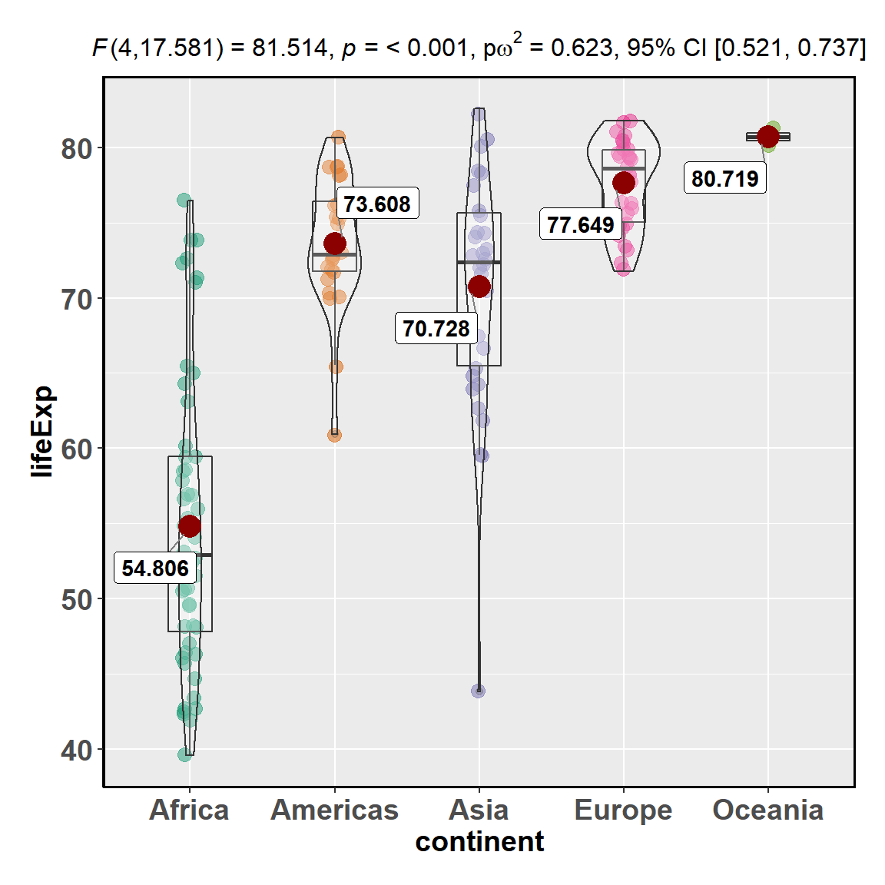
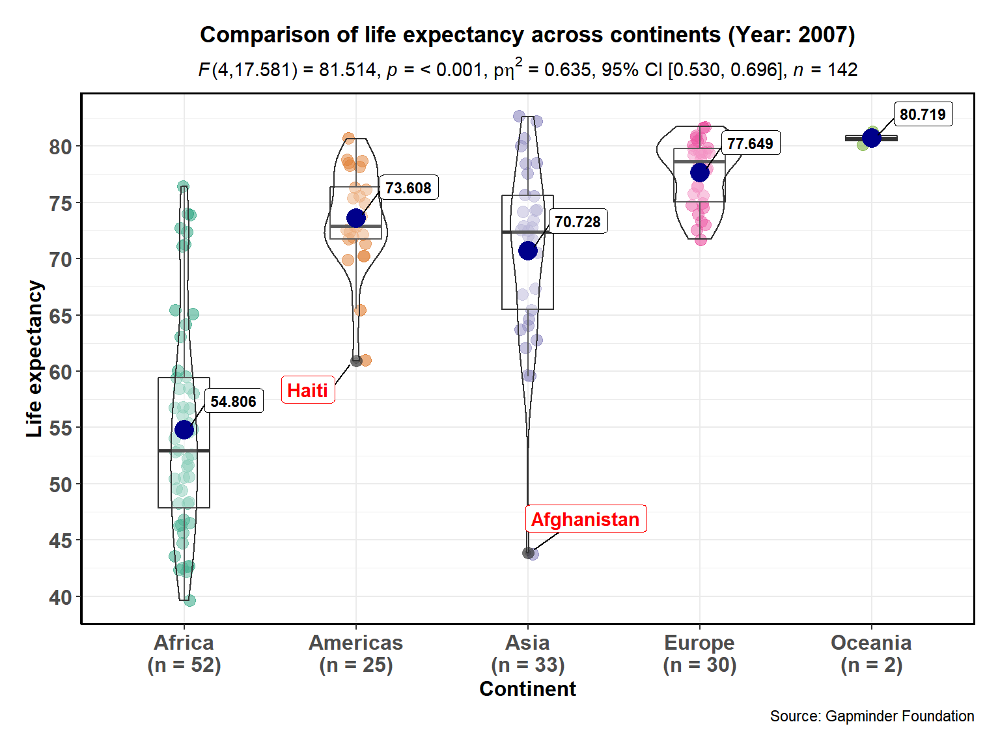
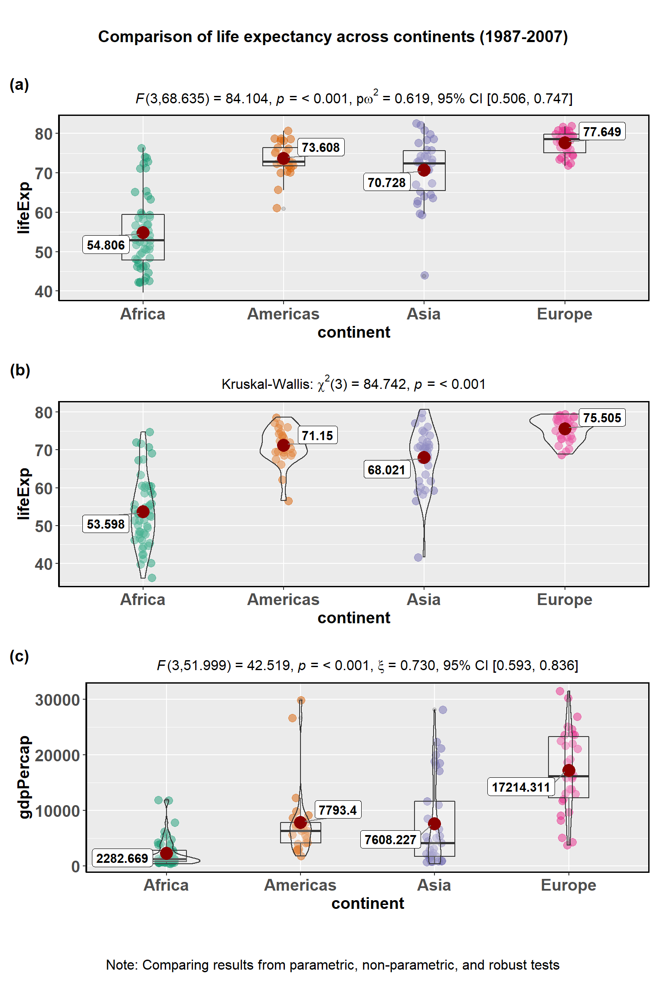
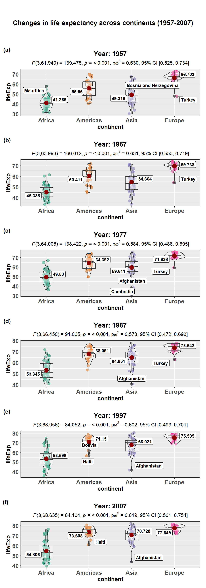
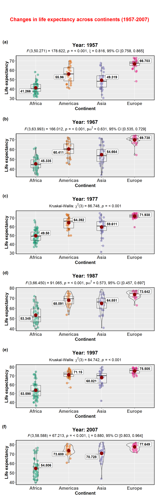

The function ggstatsplot::ggbetweenstats is designed not just to facilitate data exploration, but also for making publication-ready box-violin plot, with all statistical details included in the plot itself. We will see examples of how to use this function in this vignette.
To begin with, here are some instances where you would want to use ggbetweenstats-
Note before: The following demo uses the pipe operator (%>%), so in case you are not familiar with this operator, here is a good explanation: http://r4ds.had.co.nz/pipes.html
ggbetweenstats
To illustrate how this function can be used, we will use the gapminder dataset. This dataset provides values for life expectancy, GDP per capita, and population, every five years, from 1952 to 2007, for each of 142 countries and was collected by the Gapminder Foundation. Let’s have a look at the data-
library(gapminder)
library(dplyr)
dplyr::glimpse(x = gapminder::gapminder)
#> Observations: 1,704
#> Variables: 6
#> $ country <fct> Afghanistan, Afghanistan, Afghanistan, Afghanistan, ...
#> $ continent <fct> Asia, Asia, Asia, Asia, Asia, Asia, Asia, Asia, Asia...
#> $ year <int> 1952, 1957, 1962, 1967, 1972, 1977, 1982, 1987, 1992...
#> $ lifeExp <dbl> 28.801, 30.332, 31.997, 34.020, 36.088, 38.438, 39.8...
#> $ pop <int> 8425333, 9240934, 10267083, 11537966, 13079460, 1488...
#> $ gdpPercap <dbl> 779.4453, 820.8530, 853.1007, 836.1971, 739.9811, 78...Suppose the first thing we want to check is the distribution of life expectancy worldwide (across continents, i.e.) in 2007. That is, we want to see if the average (across countries in a given continent) life expectancy differs significantly across five continents.
The simplest form of the function call is-
# loading the necessary libraries
library(ggstatsplot)
library(gapminder)
# since the confidence intervals for the effect sizes are computed using
# bootstrapping, important to set a seed for reproducibility
set.seed(123)
# function call
ggstatsplot::ggbetweenstats(
data = dplyr::filter(.data = gapminder, year == 2007),
x = continent,
y = lifeExp,
messages = FALSE
)
Note that the test automatically figures out whether independent t-test is to be run or an ANOVA based on the number of levels in the grouping variable. Additionally, the function output a ggplot object which means that it can be further modified.
We will see how this basic call can be further modified with additional arguments-
library(ggstatsplot)
library(gapminder)
# for reproducibility
set.seed(123)
ggstatsplot::ggbetweenstats(
data = dplyr::filter(.data = gapminder, year == 2007), # dataframe
x = continent, # grouping/independent variable
y = lifeExp, # dependent variables
xlab = "Continent", # label for the x-axis
ylab = "Life expectancy", # label for the y-axis
plot.type = "boxviolin", # type of plot
type = "parametric", # type of statistical test
effsize.type = "biased", # type of effect size
outlier.tagging = TRUE, # whether outliers should be flagged
outlier.coef = 1.5, # coefficient for Tukey's rule
outlier.label = country, # label to attacht to outlier values
outlier.label.color = "red", # outlier point label color
mean.plotting = TRUE, # whether the mean is to be displayed
mean.color = "darkblue", # color for mean
messages = FALSE, # turn off messages
ggtheme = ggthemes::theme_economist(), # a different theme
package = "yarrr", # package from which color palette is to be taken
palette = "info2", # choosing a different color palette
title = "Comparison of life expectancy across continents (Year: 2007)",
caption = "Source: Gapminder Foundation"
) + # modifying the plot further
ggplot2::scale_y_continuous(limits = c(35,85), breaks = seq(from = 35, to = 85, by = 5))
As can be appreciated from the effect size of 0.635, there are big differences in the observed life expectancy across continents. Importantly, this plot also helps us appreciate the differences within any given continent. For example, although Asian countries are doing much better than African countries, on average, Afghanistan has a particularly grim average for the Asian continent, possibly reflecting the war and the political turmoil.
Out of curiosity, we can repeat the same analysis with other available feature of ggstatsplot: - The type (of test) argument also accepts the following abbreviations: "p" (for parametric), "np" (for nonparametric), "r" (for robust). - The type of plot to be displayed can also be modified ("box", "violin", or "boxviolin"). Let’s produce all of these variations in the plot below. - The color palettes can be modified.
Let’s try out both of these features by plotting continent-level differences for three different years, separated by a decade. Also, since there are just two data points for the continent of Oceania, let’s leave out this continent from our analysis.
For example,
library(ggstatsplot)
library(gapminder)
# selecting subset of the data
df_year <- dplyr::filter(.data = gapminder::gapminder, year == 2007 | year == 1957)
# for reproducibility
set.seed(123)
# parametric ANOVA and box plot
p1 <- ggstatsplot::ggbetweenstats(
data = df_year,
x = year,
y = lifeExp,
plot.type = "box",
type = "p",
effsize.type = "d",
title = "parametric test",
package = "ggsci",
palette = "nrc_npg",
messages = FALSE
)
# Kruskal-Wallis test (nonparametric ANOVA) and violin plot
p2 <- ggstatsplot::ggbetweenstats(
data = df_year,
x = year,
y = lifeExp,
plot.type = "violin",
type = "np",
title = "non-parametric test",
package = "ggsci",
palette = "uniform_startrek",
messages = FALSE
)
# robust ANOVA and boxviolin plot
p3 <- ggstatsplot::ggbetweenstats(
data = df_year,
x = year,
y = lifeExp,
plot.type = "boxviolin",
type = "r",
title = "robust test",
tr = 0.005,
package = "wesanderson",
palette = "Royal2",
messages = FALSE
)
# robust ANOVA and boxviolin plot
p4 <- ggstatsplot::ggbetweenstats(
data = df_year,
x = year,
y = lifeExp,
type = "bf",
title = "bayesian test",
package = "palettetown",
palette = "natu",
messages = FALSE
)
# combining the individual plots into a single plot
ggstatsplot::combine_plots(
p1, p2, p3, p4,
nrow = 2,
ncol = 2,
labels = c("(a)", "(b)", "(c)"),
title.text = "Comparison of life expectancy between 1957 and 2007",
caption.text = "Note: Comparing results from parametric, non-parametric, robust, and bayesian tests",
title.size = 14,
caption.size = 12
)
grouped_ggbetweenstats
What if we want to do the same analysis separately for each year for which the data is available, i.e. checking how the differences in life expectancy have changed since this data collection started in 1952 until 2007? In that case, we will have to either write a for loop or use purrr, both of which are time consuming and can be a bit of a struggle.
ggstatsplot provides a special helper function for such instances: grouped_ggbetweenstats. This is merely a wrapper function around ggstatsplot::combine_plots. It applies ggbetweenstats across all levels of a specified grouping variable and then combines list of individual plots into a single plot. Note that the grouping variable can be anything: conditions in a given study, groups in a study sample, different studies, etc.
Let’s focus on the following years to see these changes for every 10 years: 1957, 1967, 1977, 1987, 1997, 2007.
# for reproducibility
set.seed(123)
ggstatsplot::grouped_ggbetweenstats(
# arguments relevant for ggstatsplot::ggbetweenstats
data = dplyr::filter(
.data = gapminder::gapminder,
year == 1957 |
year == 1967 |
year == 1977 |
year == 1987 |
year == 1997 |
year == 2007, continent != "Oceania"
),
x = continent,
y = lifeExp,
# number of decimal places in results
k = 2,
ggtheme = ggthemes::theme_tufte(),
package = "ggsci",
palette = "default_jco",
outlier.tagging = TRUE,
ggstatsplot.layer = FALSE,
outlier.label = country,
grouping.var = year,
title.prefix = "Year",
messages = FALSE,
# arguments relevant for ggstatsplot::combine_plots
title.text = "Changes in life expectancy across continents (1957-2007)",
nrow = 6,
ncol = 1,
labels = c("(a)","(b)","(c)", "(d)", "(e)", "(f)")
)
As seen from the plot, although the life expectancy has been improving steadily across all continents as we go from 1957 to 2007, this improvement has not been happening at the same rate for all continents. Additionally, irrespective of which year we look at, we still find significant differences in life expectancy across continents which have been surprisingly consistent across five decades (based on the observed effect sizes).
ggbetweenstats + purrr
Although this grouping function provides a quick way to explore the data, it leaves much to be desired. For example, the same type of plot and test is applied for all years, but maybe we want to change this for different years, or maybe we want to gave different effect sizes for different years. This type of customization for different levels of a grouping variable is not possible with grouped_ggbetweenstats, but we will see how this can be easily achieved using the purrr package.
Note before: * Unlike the function call so far, while using purrr::pmap, we will need to quote the arguments. * You can use ggplot2 themes from extension packages (like ggthemes).
# for reproducibility
set.seed(123)
# let's split the dataframe and create a list by years of interest
year_list <- gapminder::gapminder %>%
dplyr::filter(
.data = .,
year == 1957 |
year == 1967 |
year == 1977 |
year == 1987 |
year == 1997 |
year == 2007, continent != "Oceania"
) %>%
base::split(x = ., f = .$year, drop = TRUE)
# this created a list with 4 elements, one for each mpaa rating
# you can check the structure of the file for yourself
# str(year_list)
# checking the length and names of each element
length(year_list)
#> [1] 6
names(year_list)
#> [1] "1957" "1967" "1977" "1987" "1997" "2007"
# running function on every element of this list; note that if you want the same
# value for a given argument across all elements of the list, you need to
# specify it just once
plot_list <- purrr::pmap(
.l = list(
data = year_list,
x = "continent",
y = "lifeExp",
outlier.label = "country",
outlier.label.color = list(
"#56B4E9",
"#009E73",
"#F0E442",
"#0072B2",
"#D55E00",
"#CC79A7"
),
xlab = "Continent",
ylab = "Life expectancy",
title = list(
"Year: 1957",
"Year: 1967",
"Year: 1977",
"Year: 1987",
"Year: 1997",
"Year: 2007"
),
type = list("r", "p", "np", "p", "p", "r"),
k = list(1, 2, 3, 3, 2, 1),
effsize.type = list(
NULL,
"partial_omega",
NULL,
"partial_omega",
"partial_eta",
NULL
),
plot.type = list("box", "boxviolin", "box", "boxviolin", "box", "violin"),
mean.ci = list(TRUE, FALSE, FALSE, FALSE, TRUE, TRUE),
package = list("nord", "ochRe", "awtools", "ggsci", "yarrr", "RColorBrewer"),
palette = list("aurora", "parliament", "ppalette", "default_nejm", "basel", "Set1"),
ggtheme = list(
ggthemes::theme_stata(),
ggplot2::theme_classic(),
ggthemes::theme_fivethirtyeight(),
ggplot2::theme_minimal(),
ggthemes::theme_wsj(),
ggthemes::theme_calc()
),
ggstatsplot.layer = list(FALSE, FALSE, FALSE, FALSE, TRUE, FALSE),
sample.size.label = list(TRUE, FALSE, TRUE, FALSE, FALSE, TRUE),
messages = TRUE
),
.f = ggstatsplot::ggbetweenstats
)
#> Note: 95% CI for explanatory measure of effect size was computed with 100 bootstrap samples.Note: In case of error, try reducing the trimming level 0.1 and/or increasing the number of bootstrap samples 100Note: Shapiro-Wilk Normality Test for lifeExp : p-value = < 0.001Note: Bartlett's test for homogeneity of variances for factor continent : p-value = < 0.001Note: 95% CI for partial omega-squared was computed with 100 bootstrap samples.Note: Shapiro-Wilk Normality Test for lifeExp : p-value = < 0.001Note: Bartlett's test for homogeneity of variances for factor continent : p-value = < 0.001Note: No effect size available for Kruskal-Wallis Rank Sum Test.Note: Shapiro-Wilk Normality Test for lifeExp : p-value = < 0.001Note: Bartlett's test for homogeneity of variances for factor continent : p-value = < 0.001Note: 95% CI for partial omega-squared was computed with 100 bootstrap samples.Note: Shapiro-Wilk Normality Test for lifeExp : p-value = < 0.001Note: Bartlett's test for homogeneity of variances for factor continent : p-value = < 0.001Note: 95% CI for partial eta-squared was computed with 100 bootstrap samples.Note: Shapiro-Wilk Normality Test for lifeExp : p-value = < 0.001Note: Bartlett's test for homogeneity of variances for factor continent : p-value = < 0.001Note: 95% CI for explanatory measure of effect size was computed with 100 bootstrap samples.Note: In case of error, try reducing the trimming level 0.1 and/or increasing the number of bootstrap samples 100Note: Shapiro-Wilk Normality Test for lifeExp : p-value = < 0.001Note: Bartlett's test for homogeneity of variances for factor continent : p-value = < 0.001
# combining all individual plots from the list into a single plot using combine_plots function
ggstatsplot::combine_plots(
plotlist = plot_list,
title.text = "Changes in life expectancy across continents (1957-2007)",
title.color = "red",
nrow = 6,
ncol = 1,
labels = c("(a)","(b)","(c)","(d)", "(e)", "(f)")
)
Variant of this function ggwithinstats is currently under work. You can still use this function just to prepare the plot for exploratory data analysis, but the statistical details displayed in the subtitle will be incorrect. You can remove them by adding + ggplot2::labs(subtitle = NULL).
If you find any bugs or have any suggestions/remarks, please file an issue on GitHub: https://github.com/IndrajeetPatil/ggstatsplot/issues
Summarizing session information for reproducibility.
options(width = 200)
devtools::session_info()
#> Session info ------------------------------------------------------------------------------------------------------------------------------------------------------------------------------------------
#> setting value
#> version R version 3.5.1 (2018-07-02)
#> system x86_64, mingw32
#> ui RTerm
#> language (EN)
#> collate English_United States.1252
#> tz America/New_York
#> date 2018-09-15
#> Packages ----------------------------------------------------------------------------------------------------------------------------------------------------------------------------------------------
#> package * version date source
#> abind 1.4-5 2016-07-21 CRAN (R 3.5.0)
#> assertthat 0.2.0 2017-04-11 CRAN (R 3.5.0)
#> backports 1.1.2 2017-12-13 CRAN (R 3.5.0)
#> base * 3.5.1 2018-07-02 local
#> BayesFactor 0.9.12-4.2 2018-05-19 CRAN (R 3.5.0)
#> bayesplot 1.6.0 2018-08-02 CRAN (R 3.5.1)
#> bindr 0.1.1 2018-03-13 CRAN (R 3.5.0)
#> bindrcpp * 0.2.2 2018-03-29 CRAN (R 3.5.0)
#> boot 1.3-20 2017-08-06 CRAN (R 3.5.1)
#> broom 0.5.0.9001 2018-09-16 Github (tidyverse/broom@1e65668)
#> car 3.0-2 2018-08-23 CRAN (R 3.5.1)
#> carData 3.0-1 2018-03-28 CRAN (R 3.5.0)
#> cellranger 1.1.0 2016-07-27 CRAN (R 3.5.0)
#> coda 0.19-1 2016-12-08 CRAN (R 3.5.0)
#> codetools 0.2-15 2016-10-05 CRAN (R 3.5.1)
#> coin 1.2-2 2017-11-28 CRAN (R 3.5.0)
#> colorspace 1.3-2 2016-12-14 CRAN (R 3.5.0)
#> commonmark 1.5 2018-04-28 CRAN (R 3.5.0)
#> compiler 3.5.1 2018-07-02 local
#> cowplot 0.9.99 2018-08-23 Github (wilkelab/cowplot@374c3e9)
#> crayon 1.3.4 2017-09-16 CRAN (R 3.5.0)
#> curl 3.2 2018-03-28 CRAN (R 3.5.0)
#> data.table 1.11.4 2018-05-27 CRAN (R 3.5.0)
#> datasets * 3.5.1 2018-07-02 local
#> desc 1.2.0 2018-05-01 CRAN (R 3.5.0)
#> devtools 1.13.6 2018-06-27 CRAN (R 3.5.1)
#> digest 0.6.17 2018-09-12 CRAN (R 3.5.1)
#> dplyr * 0.7.6 2018-06-29 CRAN (R 3.5.0)
#> effsize 0.7.1 2017-03-21 CRAN (R 3.5.0)
#> emmeans 1.2.3 2018-07-18 CRAN (R 3.5.1)
#> estimability 1.3 2018-02-11 CRAN (R 3.5.0)
#> evaluate 0.11 2018-07-17 CRAN (R 3.5.1)
#> exact2x2 1.6.3 2018-07-27 CRAN (R 3.5.1)
#> exactci 1.3-3 2017-10-02 CRAN (R 3.5.0)
#> forcats 0.3.0 2018-02-19 CRAN (R 3.5.0)
#> foreign 0.8-70 2017-11-28 CRAN (R 3.5.1)
#> fs 1.2.6 2018-08-23 CRAN (R 3.5.1)
#> gapminder * 0.3.0 2017-10-31 CRAN (R 3.5.0)
#> generics 0.0.1.9000 2018-09-16 Github (r-lib/generics@aaa6122)
#> ggcorrplot 0.1.2 2018-09-11 CRAN (R 3.5.1)
#> ggExtra 0.8 2018-08-14 Github (daattali/ggExtra@76d1618)
#> ggplot2 3.0.0.9000 2018-09-05 Github (tidyverse/ggplot2@f636f34)
#> ggrepel 0.8.0.9000 2018-09-09 Github (slowkow/ggrepel@91877ca)
#> ggridges 0.5.0 2018-04-05 CRAN (R 3.5.0)
#> ggstatsplot * 0.0.5.9000 2018-09-16 local
#> ggthemes 4.0.1 2018-08-24 CRAN (R 3.5.1)
#> glmmTMB 0.2.2.0 2018-07-03 CRAN (R 3.5.1)
#> glue 1.3.0 2018-07-17 CRAN (R 3.5.1)
#> graphics * 3.5.1 2018-07-02 local
#> grDevices * 3.5.1 2018-07-02 local
#> grid 3.5.1 2018-07-02 local
#> gtable 0.2.0 2016-02-26 CRAN (R 3.5.0)
#> gtools 3.8.1 2018-06-26 CRAN (R 3.5.0)
#> haven 1.1.2 2018-06-27 CRAN (R 3.5.0)
#> hms 0.4.2 2018-03-10 CRAN (R 3.5.0)
#> htmltools 0.3.6 2017-04-28 CRAN (R 3.5.0)
#> httpuv 1.4.5 2018-07-19 CRAN (R 3.5.1)
#> jmv 0.9.2.0 2018-08-12 CRAN (R 3.5.1)
#> jmvcore 0.9.2.0 2018-08-12 CRAN (R 3.5.1)
#> knitr 1.20.12 2018-08-13 local
#> labeling 0.3 2014-08-23 CRAN (R 3.5.0)
#> later 0.7.4 2018-08-31 CRAN (R 3.5.1)
#> lattice 0.20-35 2017-03-25 CRAN (R 3.5.1)
#> lazyeval 0.2.1 2017-10-29 CRAN (R 3.5.0)
#> lme4 1.1-18-1 2018-08-17 CRAN (R 3.5.1)
#> magrittr 1.5 2014-11-22 CRAN (R 3.5.0)
#> MASS 7.3-50 2018-04-30 CRAN (R 3.5.1)
#> Matrix 1.2-14 2018-04-13 CRAN (R 3.5.1)
#> MatrixModels 0.4-1 2015-08-22 CRAN (R 3.5.0)
#> mc2d 0.1-18 2017-03-06 CRAN (R 3.5.0)
#> memoise 1.1.0 2017-04-21 CRAN (R 3.5.0)
#> methods * 3.5.1 2018-07-02 local
#> mime 0.5 2016-07-07 CRAN (R 3.5.0)
#> miniUI 0.1.1.1 2018-05-18 CRAN (R 3.5.0)
#> minqa 1.2.4 2014-10-09 CRAN (R 3.5.0)
#> mnormt 1.5-5 2016-10-15 CRAN (R 3.5.0)
#> modelr 0.1.2 2018-05-11 CRAN (R 3.5.0)
#> modeltools 0.2-22 2018-07-16 CRAN (R 3.5.1)
#> multcomp 1.4-8 2017-11-08 CRAN (R 3.5.0)
#> munsell 0.5.0 2018-06-12 CRAN (R 3.5.0)
#> mvtnorm 1.0-8 2018-05-31 CRAN (R 3.5.0)
#> nlme 3.1-137 2018-04-07 CRAN (R 3.5.1)
#> nloptr 1.0.4 2017-08-22 CRAN (R 3.5.0)
#> openxlsx 4.1.0 2018-05-26 CRAN (R 3.5.0)
#> paletteer 0.1.0 2018-07-10 CRAN (R 3.5.1)
#> parallel 3.5.1 2018-07-02 local
#> pbapply 1.3-4 2018-01-10 CRAN (R 3.5.0)
#> pillar 1.3.0.9000 2018-07-23 Github (r-lib/pillar@7582a75)
#> pkgconfig 2.0.2 2018-08-16 CRAN (R 3.5.1)
#> pkgdown 1.1.0 2018-06-02 CRAN (R 3.5.1)
#> plyr 1.8.4 2016-06-08 CRAN (R 3.5.0)
#> prediction 0.3.6 2018-05-22 CRAN (R 3.5.0)
#> promises 1.0.1 2018-04-13 CRAN (R 3.5.0)
#> psych 1.8.4 2018-05-06 CRAN (R 3.5.0)
#> purrr 0.2.5 2018-05-29 CRAN (R 3.5.0)
#> purrrlyr 0.0.3 2018-05-29 CRAN (R 3.5.0)
#> pwr 1.2-2 2018-03-03 CRAN (R 3.5.0)
#> R6 2.2.2 2017-06-17 CRAN (R 3.5.0)
#> Rcpp 0.12.18 2018-07-23 CRAN (R 3.5.1)
#> readxl 1.1.0 2018-04-20 CRAN (R 3.5.0)
#> reshape 0.8.7 2017-08-06 CRAN (R 3.5.0)
#> rio 0.5.10 2018-03-29 CRAN (R 3.5.0)
#> rjson 0.2.20 2018-06-08 CRAN (R 3.5.0)
#> rlang 0.2.2 2018-08-16 CRAN (R 3.5.1)
#> rmarkdown 1.10 2018-06-11 CRAN (R 3.5.0)
#> roxygen2 6.1.0.9000 2018-09-13 Github (klutometis/roxygen@cc34200)
#> rprojroot 1.3-2 2018-01-03 CRAN (R 3.5.0)
#> rstudioapi 0.7 2017-09-07 CRAN (R 3.5.0)
#> sandwich 2.5-0 2018-08-17 CRAN (R 3.5.1)
#> scales 1.0.0 2018-08-09 CRAN (R 3.5.1)
#> shiny 1.1.0 2018-05-17 CRAN (R 3.5.0)
#> sjlabelled 1.0.14 2018-09-12 CRAN (R 3.5.1)
#> sjmisc 2.7.5 2018-09-13 CRAN (R 3.5.1)
#> sjstats 0.17.0 2018-08-20 CRAN (R 3.5.1)
#> snakecase 0.9.2 2018-08-14 CRAN (R 3.5.1)
#> splines 3.5.1 2018-07-02 local
#> ssanv 1.1 2015-06-23 CRAN (R 3.5.0)
#> stats * 3.5.1 2018-07-02 local
#> stats4 3.5.1 2018-07-02 local
#> stringdist 0.9.5.1 2018-06-08 CRAN (R 3.5.0)
#> stringi 1.2.4 2018-07-20 CRAN (R 3.5.1)
#> stringr 1.3.1 2018-05-10 CRAN (R 3.5.0)
#> survival 2.42-3 2018-04-16 CRAN (R 3.5.1)
#> TH.data 1.0-9 2018-07-10 CRAN (R 3.5.1)
#> tibble 1.4.2 2018-01-22 CRAN (R 3.5.1)
#> tidyr 0.8.1 2018-05-18 CRAN (R 3.5.0)
#> tidyselect 0.2.4 2018-02-26 CRAN (R 3.5.0)
#> TMB 1.7.14 2018-06-23 CRAN (R 3.5.0)
#> tools 3.5.1 2018-07-02 local
#> utils * 3.5.1 2018-07-02 local
#> withr 2.1.2 2018-03-15 CRAN (R 3.5.0)
#> WRS2 0.10-0 2018-06-15 CRAN (R 3.5.0)
#> xfun 0.3 2018-07-06 CRAN (R 3.5.1)
#> xml2 1.2.0 2018-01-24 CRAN (R 3.5.0)
#> xtable 1.8-3 2018-08-29 CRAN (R 3.5.1)
#> yaml 2.2.0 2018-07-25 CRAN (R 3.5.1)
#> zip 1.0.0 2017-04-25 CRAN (R 3.5.0)
#> zoo 1.8-3 2018-07-16 CRAN (R 3.5.1)